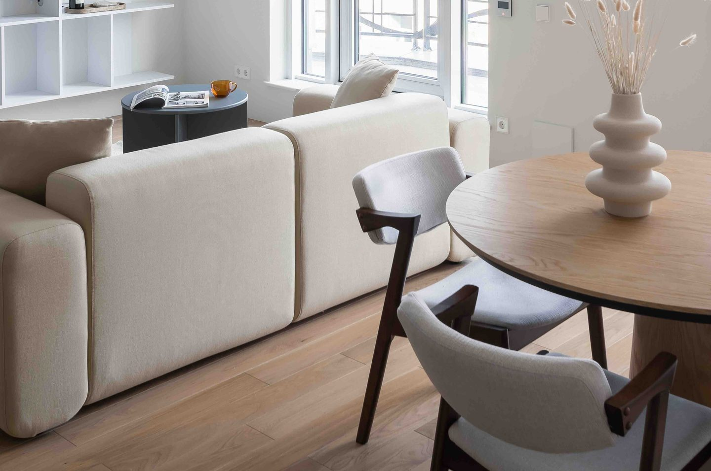
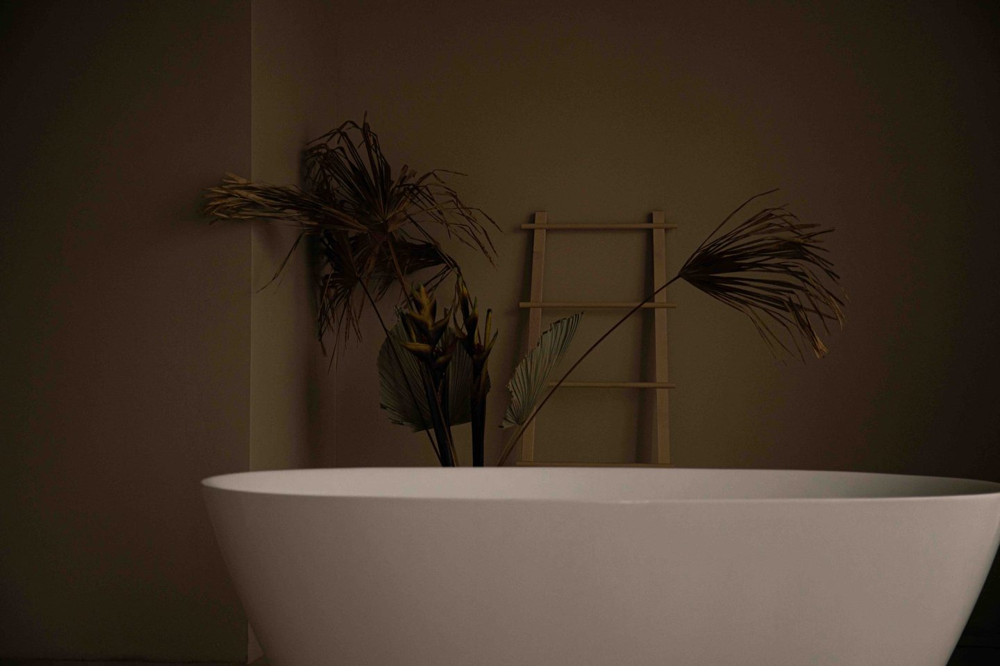

There is a specific feeling I couldn't name for a long time. It happened most on Tuesday afternoons — still at my desk at 4pm, behind on everything and ahead of nothing, when the flat white light of my apartment would shift and I'd feel, inexplicably, more tired than I should. Not the productive kind of tired. The hollow kind.
I blamed the season. I blamed the hours. It took a friend who renovates spaces for a living to say the thing I hadn't considered: "Have you looked at what your walls are actually doing to you?"
My walls were cool gray. Bright white trim. The combination that defined a decade of Pinterest boards and minimalist aspirations. Clean, I thought. Modern. Calm. But environmental psychology has been quietly building a case against exactly that palette — and in 2026, the interior design world finally listened.
The shift has a name: comfortcore. And its central argument is that the home you've been designing for aesthetics has been working against the rest your body is desperately trying to find.

The shift away from cool minimalism isn't a trend — it's a correction. Your home should feel like the warmest place you know.
Why Cool Gray Stopped Working
The all-gray interior wasn't always wrong. It arrived in response to a real overcorrection — the aggressively saturated, heavily patterned rooms of an earlier era. Gray felt like a breath. Like restraint. Like the visual equivalent of a clear inbox.
But color psychology has consistently found that cool, low-saturation neutrals — especially when they dominate a space without warmth to balance them — activate the same part of the nervous system as clinical environments. Hospitals. Waiting rooms. Places where you are not fully at ease. The brain associates clean, cool, and shadowless with a certain kind of alert watchfulness. Not rest.
Warm tones, by contrast — ochres, taupes, clay, the particular soft green of eucalyptus — trigger what researchers call a restorative response. Your cortisol drops. Your jaw unclenches. Something in your body reads the color as permission to soften. It reads it, in the most ancient part of your brain, as nature. As shelter. As safe.
This isn't new science — it's ancient wiring meeting modern awareness. And in 2026, the interior design world stopped fighting it.
Your home should be the place your nervous system fully exhales. The color on your walls decides whether it ever gets the chance.
The 2026 Color Families Worth Knowing
The shift isn't about a single color or a single season. It's a broader reorientation toward warmth, texture, and the specific quality of light that earthen tones create in a room. Here are the five families leading it.
Warm greige and taupe
The most significant replacement for cool gray isn't another gray — it's greige: the warm middle space between beige and gray that reads as soft, grounded, and deeply livable. Think mushroom, soft sand, milky khaki. Colors like Universal Khaki — one of the standout 2026 shades — work across entire homes because they shift slightly with the light: warmer by candlelight, softer in the morning, never harsh. Rooms painted in greige feel approachable in a way that cool gray rarely does. They feel like somewhere you'd actually choose to spend time.
Earthy greens — warm eucalyptus and sage
Greens are having a moment that has nothing to do with trend and everything to do with biology. Biophilic design — the practice of bringing nature into interior spaces — has decades of research behind it, all pointing in the same direction: exposure to natural tones and forms reduces stress hormones and improves cognitive restoration. You don't need a garden. You need the right green on your walls.
Warm eucalyptus — a gray-green with earthy undertones, neither blue nor yellow, deeply quiet — has become the defining restorative color of 2026. It asks nothing of you when you walk into the room. It simply settles. Sage works similarly in smaller doses: in a bathroom, a hallway, a reading nook. Anywhere you want the specific feeling of stepping slightly outside the world.
Clay, terracotta, and sunbaked hues
Terracotta has been building quietly for several years, and in 2026 it arrived fully. Not the bright, kitschy orange of a 1970s kitchen, but something altogether more considered — muted, dusty, sun-warmed. The color of old walls in Tuscany or the tiles of a Portuguese courtyard. Paired with natural linen and warm wood, it creates a particular atmosphere that is impossible to fake: the feeling of a home that has been lived in warmly for a long time.
Clay tones work especially well in dining rooms and kitchens — spaces where warmth and gathering are the emotional intention. And against the backdrop of terracotta, everything on a table looks more beautiful. The food, the candles, the faces of the people you love.
Soft pastels — grown up and intentional
The pastels making their way into 2026 interiors aren't the chalky, saccharine versions of a nursery palette. They are butter yellows with enough warmth to read as almost neutral in certain light. Dusty lilacs so muted they live closer to lavender-gray. Soft pinks that behave more like a complexion tone than a color statement. Used in adult spaces — a home office, a bedroom, a reading corner — they add a quality that is genuinely difficult to name: a kind of unhurried ease that makes the room feel like there is no particular urgency to leave it.
Deep moody tones for the rooms where you go to disappear
There is a particular kind of comfort that only comes in darker spaces — and the comfortcore movement has fully embraced it. Deep plum, charcoal sage, espresso brown applied to walls, ceiling, and trim in a single enveloping tone creates what designers are calling a cocoon effect: the feeling that the room is holding you rather than exposing you. Bedrooms and home offices have been the primary canvas, and the effect is transformative. You stop looking for things to do and start allowing yourself to simply be.
Five Changes I Made That Actually Worked
I didn't repaint the whole house. I wasn't looking for a renovation project — I was looking for a different feeling when I came home. These five changes, in roughly the order I made them, are the ones that stayed.
- Replaced cool gray with warm mushroom taupe in the main living area. The difference was immediate and almost embarrassing — I couldn't believe how much the color had been quietly draining the room of warmth. The taupe reads neutral in photographs and rich in person, which is exactly what you want from a wall. The room stopped feeling like a place I was passing through and started feeling like somewhere I wanted to linger.
- Tried color drenching in my bedroom — walls, trim, and ceiling in one tone. Color drenching — painting an entire room including trim and ceiling in a single muted shade — sounds like it would overwhelm a space. It does the opposite. The absence of contrast creates a quality of visual quiet that you have to experience to fully understand. I used a soft warm eucalyptus and have not once, in the months since, felt anxious in that room at night.
- Applied a deep tone in my home office to create a cocoon effect. I was sceptical about putting dark paint in a small room. But charcoal sage on the walls, in a space I'd never quite been able to fully settle into, turned out to be the single most effective thing I've done for my focus. The darkness removes the visual noise. You stop looking around and start looking in.
- Paired every new paint color with natural materials. Warm paint alone does only half the work. Natural wood, woven textures, stone surfaces, and linen amplify the earthy, grounded quality of the new palette in a way that synthetic materials simply don't. The comfortcore aesthetic is fundamentally tactile — it asks your hand, not just your eye, to feel at home.
- Changed all bulbs to 2700K warm white. This was the cheapest and most immediately impactful change. Cool white bulbs — the standard in most overhead fixtures — cancel the warmth of everything you've carefully chosen. A 2700K bulb brings out the amber undertones in taupe, the depth in sage, the richness in terracotta. The same room looks completely different. More so than the paint itself, in some cases.

Color drenching — painting walls, trim, and ceiling in a single calming tone — creates the kind of visual quiet you feel in your body before you consciously notice it.
What your home is telling you
The home that restores you doesn't have to be the home you dreamed of — it just has to stop working against you. Start with one room. One wall. One bulb. The question isn't whether color affects your mood. It does, and has always done so. The only question is whether you want to start choosing it intentionally.